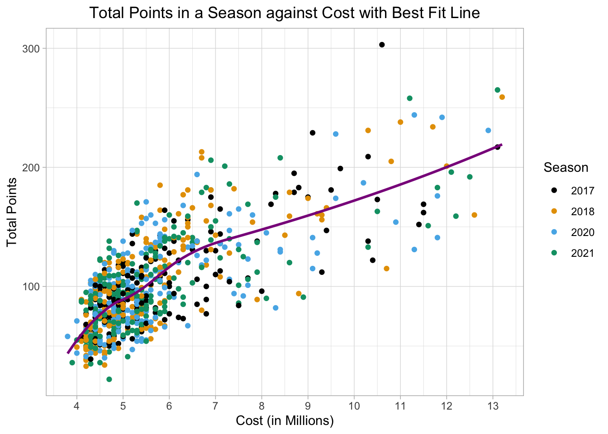
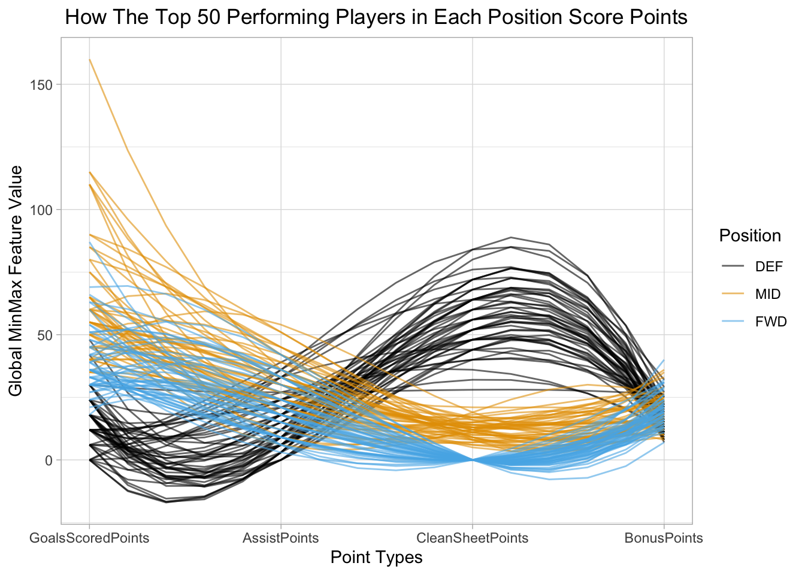
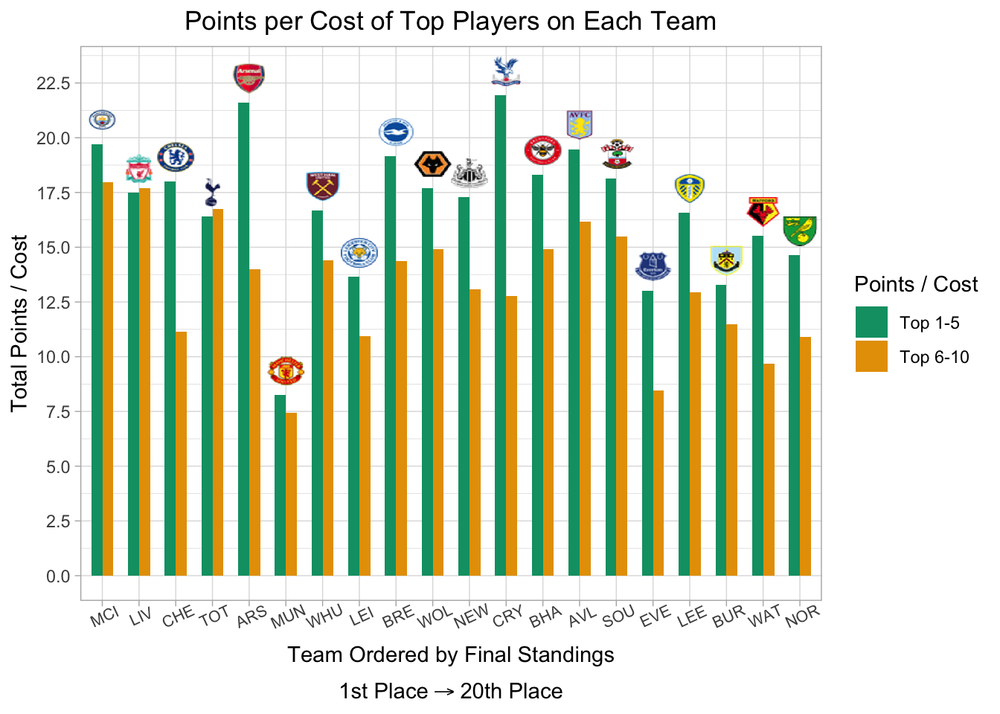

Chapter 4 Results
4.1 Player Value Using Total Points & Cost
The first way we approached determining whether a soccer player is overvalued or undervalued was by looking at the ratio of how many fantasy points a soccer player received in a season, and how much the players cost. In our analysis, we regard undervalued soccer players as having high total points in a season and a low cost. Conversely, we define overvalued soccer players as having low total points in a season compared to their price.
4.1.1 Filtering Out Bench Players
Before we get started with this analysis, it is important to note that we filtered out players who average less than 45 minutes of play time per game. In the plot below, we see can see this cutoff. While it appears that we are filtering out the majority of soccer players in the league, we want to emphasize that the players we are of little relevance in our analysis. Given fantasy users can select any 10 players in the league, and competing users can select the same players, it’s of no use to include soccer players which are unlikely to even play, as users would have no reason to select benched or injured players. Given relevant soccer players do get hurt for brief periods during the season, we found that filtering on an average of 45 minutes allowed us to remove irrelevant players, without compromising our data set.

4.1.2 Vizualizing The Problem
To understand the relationship between the total points scored in a season and the soccer player cost, we have produced a scatter plot. As can be seen from the graph, there is a positive correlation between total points and soccer player cost. This is expected as soccer players who score more points are more valuable, hence their cost should increase. However, there are large deviations from the correlation shown in the best fit line.
If a soccer player lies above the best fit line, it shows that they have a high points per cost ratio and consequently are undervalued. Likewise, if a player lies below the best fit line, they have a low points per cost ratio and are overvalued. Therefore, moving forward our analysis will investigate if there are patterns which lead to players being above or below this best fit line.
In the graph, there is no clear trend showing that the number of points a player scores in a season depends on the year. In other words, in further analysis we may assume that soccer player performance statistics are time-independent. Further, it must be noted that the 2019 analysis has been excluded from the plot as the final week of the season was missing from the data source (as discussed in the missing data analysis).
A final point to add about the graph is the fact that the best fit line, calculated using a Loess smoothing, shows the gradient is steeper before £6 million and shallower after. This indicates that there could be an element of diminishing returns in choosing the most expensive soccer players.

4.1.3 Player Value By Position
Taking a more granular perspective, we divided the players into their 3 position categories: defenders (DEF), midfielders (MID) and forwards (FWD). We then investigated how the total points, player cost and ratio of the two varied by position.
In the next graph, we see boxplots of total points, cost and points per cost for each position. In the boxplot of total points, we see that forwards generally score the most points and defenders score the least, indicating that forwards are the most valuable and defenders the least. However, when looking at the cost boxplot, we see that defenders cost the least and forwards cost the most, suggesting that defenders could have the best value for money. In the third boxplot, we divide the total points by cost and find that these two opposing effects essentially cancel out as the median points per cost is roughly 18 points per million of pounds.
Interestingly, we also notice that the variation of points per cost is largest for defenders and smallest for forwards. This implies that when choosing forwards, there is a smaller risk of the soccer player being overvalued and a smaller reward for the player being undervalued, while the reverse is true for defenders who have a larger risk and larger reward.
A final note on the graph should be that the average points per cost and median points per cost are approximately aligned, which indicates that the points per cost distributions are symmetric. This suggests that a soccer is as likely to be overvalued or undervalued irrespective of position.

4.1.3.1 Key Indicators of Player Value By Position
How Different Players Score Points
From our analysis so far, we have found that the median point per cost does not vary much across position. We have also found that forwards are less likely to be undervalued but also less likely to be overvalued, while it is the opposite for defenders. With this in mind, our next question looks to identify what traits one should look for when determining the value of defenders, midfielders and forwards.
In the parallel coordinates plot, we see that there are 3 distinct clusters for how soccer players score points, and these clusters follow position categories. With defenders, we see that they score few points from goals and assists, but a lot of points from having clean sheets (a clean sheet occurs when a team does not concede a goal during a game). Looking at midfielders and forwards, we see that most of their points come from goals and assists. Moreover, in terms of clean sheets for midfielders, they get relatively few while forwards get zero points from clean sheets (which is explained as forwards cannot score points from clean sheets). Focusing on bonus points, we have no evidence suggesting that certain positions score more bonus points than others. This leads us to the conclusion that it is best to evaluate defenders based on clean sheets, while we should judge midfielders and forwards based on goals and assists.
An interesting point to note is that soccer players with the most points from goals scored are midfielders, differing from the expectation that forwards score the most points from goals. One explanation for this could be that when a forward scores a goal they receive 4 points, while midfielders receive 5. However, deeper analysis reveals that these midfield players are Salah, Mane and Son.
In the premiere league, teams are free to change the formation of players, and how many of each position to play. It could be argued that these soccer players, should be classified as forwards because they sometimes play the striker position. Hence, one could conclude that these top scoring players in terms of points from goals occur because the players are misclassified as midfielders rather than strikers and therefore receive 5 points per goal rather than 4. This indicates that a strategy to pick undervalued players is to pick players like Salah, Mane and Son who play as wingers/strikers but are classified as midfielders in the FPL game.

Why Selected By Percentage is Important
Selected By Percentage describes the proportion of FPL users that have selected a certain soccer player in their team. For example, if the Selected By Percentage is 10% for soccer player X, this means that 10% of FPL users have chosen soccer player X for their team. To illustrate why this statistic is important, lets now assume player X has a Selected By Percentage of 95%. Whenever soccer player X plays, 95% of FPL players will receive the points player X scores. This reduces the value of picking player X in your team because whenever player X scores points, 95% of FPL players will benefit from these points. Therefore, a useful strategy to implement when building an FPL team is to try to choose soccer players with a low Selected By Percentage because if these soccer players score a lot of points, fewer FPL users will benefit from these points.
As can be seen in the relative frequency histogram faceted by position, most soccer players have a Selected By Percentage of less than 20%, which is low. Therefore, in future analysis we do not have to worry about players having a high Selected By Percentage, which would reduce their value.
Another thing to note in this graph is the fact that the majority of soccer players are defenders and midfielders, not forwards. This difference can be explained with the knowledge that a typical soccer lineup is 4-4-2, which means the team fields 4 defenders, 4 midfielders and 2 forwards. Hence, we would expect there to be more defenders and midfielders than forwards in the dataset, as soccer lineups use more defenders and midfielders.

4.1.4 Player Value By Team
In recent soccer history, the premier league has been dominated by a group of teams referred to as “The Big Six”. The teams in “The Big Six” are Manchester City (MCI), Liverpool (LIV), Chelsea (CHE), Tottenham (TOT), Arsenal (ARS), and Manchester United (MUN).
These teams all have global name recognition, with millions of fans around the world, leading to huge payroll budgets. According to The Athletic, Manchester City will spend £430 million in the 2022-2023 season paying its players, followed by Chelsea (£343 million), Manchester United (£323 million), Liverpool (£314 million), Arsenal (£244 million), and Tottenham (£205 million). Meanwhile, the bottom tier teams’ payroll budgets tend to hover between £10 - £50 million. With such market power to attract the best soccer talent, these teams use their deep pockets to stay at the top of the leaderboard.
Unsurprisingly, the best players are concentrated on these six teams. Given cost in FPL is driven by performance, it’s no surprise that the highest cost players in the FPL game are concentrated within “the “”The Big Six” teams.

In the ridge graph above, we plotted the distribution of soccer player cost in FPL in the last week of the 2017 - 2021 seasons, as cost in the last week reflects the player’s performance over the course of the entire season.
For clarity, we ordered the teams in the ridge graph by their record at the end of the 2021 season, with MCI finishing in first, and BUR finishing at the bottom. An important feature of the English Premier League is that the worst three teams are kicked out at the end of the season. So, while the top teams are competing to win the league, the bottom teams are fighting to avoid being demoted. For consistency, we chose to include only the teams which played in the league every year between 2017 and 2021.
What we see in the graph is reflective of reality, that the soccer players on the bottom of the bottom teams are mostly concentrated around a mean of £4-5 million, but as you climb up the board, the mean shifts to between £5-6 million, and the tails get longer and longer. In fact, the top performing teams appear to have multi-modal distributions in which subsets of their team are very expensive; the top performing teams have multiple high-cost superstars. Using the previous analysis that the best soccer players cost the most, this follows the claim that the best performing soccer teams have the best performing soccer players who also cost the most.
Overall, we see that there is a clear association between teams with higher records and cost of soccer players on those teams. Given the winning teams are those that score more a lot of goals and do not concede many, it’s not surprising that fantasy points, and thus cost are concentrated on those teams.
https://theathletic.com/3476123/2022/08/10/premier-league-wages-growth-tax-top-earners/
How about Points per Cost for Teams?
While the previous ridge line plot clearly indicates that players on better teams cost more in FPL, we want to ask the question “Is the higher cost of players on winning teams justified in terms of producing fantasy points?”
To find an answer, we grouped the 5 highest scoring soccer players (in terms of points) on each team in the 2021 season and divided their total points in a season by their cost shown in the bar chart below.
Next, we did the same thing with each team’s 6 to 10th highest scoring soccer players (in terms of points). Lastly, the teams are ordered from left to right in the place the team finished the 2021 season.
In looking at the Point/Cost ratio among top 5 players (the green bars), most teams range around 17.5 points per million pounds. Seeing that these bars are pretty consistent across the top and middle of the pack, we conclude that FPL users generally aren’t willing to pay disproportionate costs for players on a “Big Six” team.
Of course, there are a few major exceptions, which we find are the most interesting parts of the graph. Compared to its peers, Manchester United’s (MUN) Points/Cost ratio is lower than any other team in the league. In examining the data, we found that this is largely driven by the under performance of its key star players. For example, Cristiano Ronaldo was traded to Manchester United last year, and was expected to make a huge impact. At 37 years old, and in his 20th season of playing professional soccer, he failed to perform as highly as expected. As such, his cost was extremely high all season, but he produced few fantasy points to show for it.
When looking at the top 5 players in each team, we believe the lower Points/Cost ratio teams indicate those which under performed in the league relative to expectations. The 4 teams who’s Top 5 player had the lowest Points/Cost ratio were MUN, LEI, EVE and BUR. These teams were expected to place higher than they did given their record in 2020 and the real-life salary budget at the club’s disposal.
From this graph, we conclude two recommendations to users. First, there doesn’t appear to be a premium on Points/Cost for players on better teams. So, if you can get more bang for your buck by choosing players on the best teams, go for it.
Secondly, in terms of bank for your buck, you are almost always better off choosing a top 5 player from a lower standing team, than a top 6-10 player on a higher team.

4.2 Player Value over Time
Rather than only looking at whether a soccer player is undervalued or overvalued compared to other soccer players in the league, we decided to also investigate whether a soccer player is undervalued or overvalued at a particular instant in time across the season.
4.2.1 Predicting When Players Score the Most Points
To start this analysis, we plotted a raster plot of the number of points scored each week by each soccer player in 2021. Our hypothesis was that this plot would reveal patterns where in certain weeks lots of soccer players would score a lot of points. For example, perhaps over the Christmas period lots of players would score goals and hence score points. However, when looking at the plot there is no clear correlation between soccer players scoring points in a given week. The only weak conclusion we can make is that few points were consistently scored by soccer players in Weeks 25, 26 and 29.
There are two things to note in this graph: firstly, a color scale cut off was imposed at 10 points in an attempt to highlight trends; however, even with this cut off, there is no obvious pattern. Secondly, it is worth mentioning that a lot of advanced analytics and machine learning projects are currently investigating the challenge of predicting when soccer players will score a lot of points in FPL. If the reader is interested in this ML analysis, we suggest researching the following links: FPL Forum Predictions and an FPL Data Anlytics Paper.
4.2.2 Can We Buy Low & Sell High?
As discussed earlier, the strategy in winning FPL lies in being able to find the low cost players which provide the highest number of points. In trying to identify these bargain players, we wanted to see which soccer players over the course of the season had their prices go up the most, and conversely, those whose prices went down the most.
In all, there was far less movement in player cost than anticipated. For the past three seasons, the top 10 highest cost players at the beginning of the season were also the top 10 highest cost players at the end of the season, indicating that player costs don’t fluctuate greatly.
Quantifying this, we found that about 75% of players have costs which vary less than +/- £200,000 over the course of the entire season. As such, we decided to graph the costs of players over the 2021 season whose price went up or down by £300,000 or more.
On the first chart, we see soccer players that experienced a cumulative cost decrease of £300k, or more, from their original pricing at any point during the season. As you might notice, there is a large drop in Week 1 for almost every player. For background, FPL users choose their team during the summer, before any soccer games have been played. As such, soccer player cost when initially chosen are based on last year’s performance. The large swing in costs in Week 1 can be interpreted as users reacting to the first week of games of the current season.
For comparison’s sake, we colored the lines based on whether the soccer player’s Week 37 cost (last game of the season) was greater than Week 1. In other words, whether the soccer player’s valuation recovered from the initial jolt of their Week 1 performance. Interestingly enough, you’ll notice that all players except for one (which came out neutral) were in fact valued higher at the end of the season.
In our view, the rising cost for a player signals that they were previously undervalued, or that the Cost/Points ratio was off relative to other players, and required correction. As such, picking a player on the upswing, at their lowest cost during the season, is directly equivalent to picking the player when they are most undervalued. Like stocks, we want to get in at the lowest point, and ride it to the top, which translates to the user theoretically benefiting from a lower than market rate Cost/Point ratio until the soccer player’s cost peaks.
What the graph above shows, is that the players which experienced large negative down valuations, and ended up having an upward trajectory afterwards. Stated otherwise, pretty much every soccer player that produces fewer than expected points in Week 1 goes on fire sale.
On the other hand, the direct opposite was true among players which experienced a cumulative cost increase of £300k or more from their original pricing at any point during the season.
On the second graph, we see a very similar large shift in week 1 as fantasy users correct for the first week of games. However, an overwhelming majority of these players were valued lower in Week 37 than they were in Week 1. In other words, they were most overvalued in Week 1 and ultimately declined afterwards.
In all we can confidently conclude that players who experience a large drop in cost in Week 1 are almost certainly undervalued, while those experiencing a large increase in cost are almost certainly overvalued. While it may seem unconventional, we thus recommend users go after the players with the largest cost drops in Week 1, and avoid the players with cost increases in Week 1.
4.3 Correlation Between Cost & Selected By Percentage
Additionally, we looked for patterns in Selected By Percentage because soccer players picked by many FPL users, potentially provide greater benefit relative to players everyone else is also selecting. Therefore, we decided to plot a scatter plot of total points against Selected By Percentage to explore potential trends. From the initial interpretation of the graph, we found a weak relationship between Selected By Percentage and Total Points per cost, those who are highest selected also were more likely to have a higher cost ratio. From the graph one can see that there are many points with high Total Point per cost and low Selected By Percentage, which indicate good value players who remain less selected.
From our contextual and outside-of-the-data research, we found that Selected By Percentage is a driver of player cost. Therefore, since the graph does not consider the kinetics of the cost and the Total Points per Cost plotted is an average over the season, and the player could be selected anytime, the graph ultimately is not very insightful.
To explore the relationship between Cost and Percentage Selected By over time, both variables are plotted Game Week on a shared interval x-axis. When plotting the weekly change in cost of the top 7 most expensive players in FPL during 2021 next to the weekly Selected By Percentage of these soccer players by FPL users, we see evidence of correlations between the two, as week where the cost goes up, the Percentage Selected By also goes up. This is interesting as the Selected By is on the weekly basis impacted by cost, we would expect a rising cost to not increase the Percentage By rate, or even decreasing the picked by rate, but this was not observed, both the Cost and Percentage By went up at the same time, meaning that a soccer player could have done well, so his cost went up. Yet despite an increasing cost, said player is also picked more in anticipation for future good performances. The Cost and Percentage By also showed minimal “phase lag” behavior, where one increase/decrease will cause another to increase/decrease a week or two later, hinting that while both variables may be positively correlated, they may also be confounding to a third variable at the same time.
With this in mind, one avenue of further work could look into the correlation between average points per week up to the current week and Selected By Percentage with respective to time for all 37 weeks to see how the selection rate is impacted by marginal weekly performance.